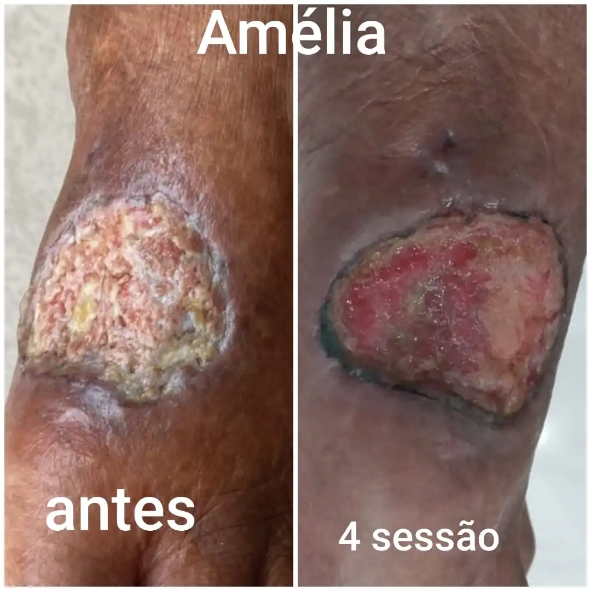
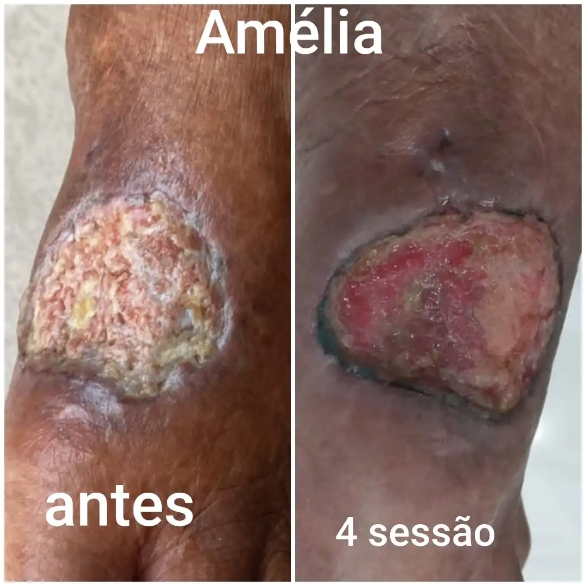

Tratamento de Feridas Complexas
Protocolos focados na cicatrização acelerada de úlceras, pé diabético e lesões por pressão.
Metodologia Única
Utilizamos a laserterapia de baixa potência para estimular a regeneração celular, reduzir a dor e a inflamação, e combater infecções. Cada caso é avaliado por meio da Consulta de Enfermagem para um plano exclusivo.
Quero Avaliar Minha Ferida
 

Laser Estética Avançada
Resultados seguros e eficazes para remoção de tatuagem, micropigmentação e onicomicose (micose de unha).
Remoção de Tatuagem e Micropigmentação
O laser Q-Switched Fragmenta o pigmento em micropartículas, que são absorvidas pelo organismo. Ideal para cobrir tatuagens antigas ou remover pigmentos indesejados.
Agendar Remoção
Onicomicose (Micose de Unha)
O laser Nd:Yag destrói o fungo (micose) na matriz da unha sem dor. É um tratamento rápido, eficaz e com alta taxa de sucesso, dispensando medicações orais em muitos casos.
Agendar MicoseTerapia ILIB Sistêmica
A Irradiação de Luz Laser sobre o Sangue (ILIB) é um tratamento anti-inflamatório e antioxidante sistêmico. Melhora a imunidade, a oxigenação, combate a dor crônica, fibromialgia e o estresse oxidativo. Promove bem-estar geral.
Agendar Sessão ILIB